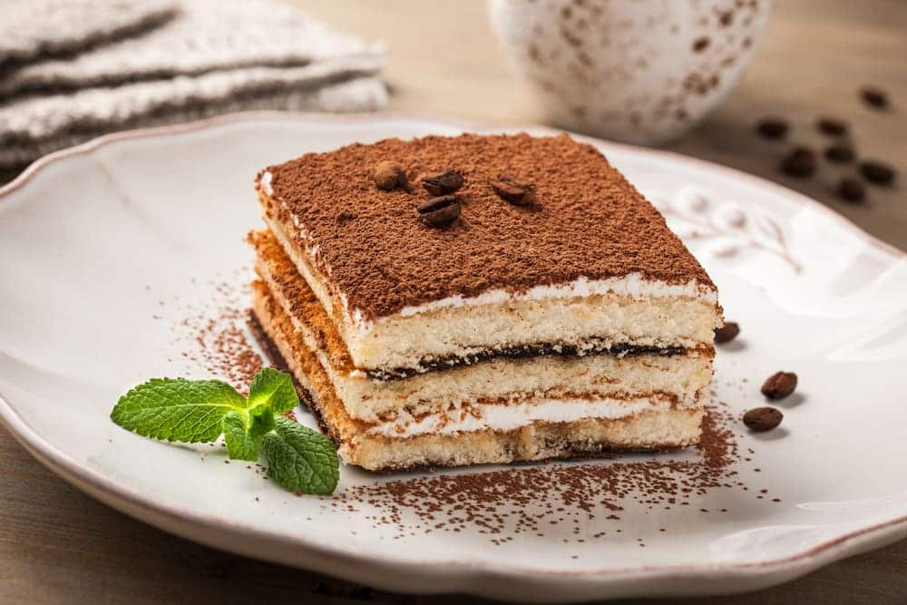

Tiramisu

Description
Tiramisu is the best dessert ever made. In my opinion. Which is the correct one... in my opinion.
It is also very easy to make, and it goes well with coffee or simply after a good dinner.
Ingredients
- 1 cup strongly brewed coffee
- 1/4 cup rum
- 4 large eggs, separated
- 2/3 cup (140g) granulated sugar
- 16 ounces mascarpone, cold from the fridge
- 1 teaspoon vanilla extract
- 1/4 teaspoon salt
- 1 16 ounce package lady fingers
- cocoa powder, for dusting
Steps
- Brew the coffee and mix with rum. Place in a bowl.
- Beat egg whites until frothy.
- Keep the mixer going as you stream in 1/3 cup of the granulated sugar
- Continue beating on high speed until your meringue forms stiff peaks
- Scrape the meringue into a separate large bowl
- Add the reserved egg yolks and remaining ⅓ cup granulated sugar. Beat on high speed until light and pale in color, about 2 minutes.
- Add in the mascarpone, remaining 2 tablespoons of rum, vanilla extract, and salt and whisk until combined, about 20 seconds.
- Mix the meringue into the bowl. Spread a thin coating of this mascarpone cream on the bottom of the baking pan.
- Quickly dunk the lady fingers into the coffee mixture on both sides (they will fall apart if you soak them any longer) and place them in a single layer in the bottom of the baking pan. Spread about half of the mascarpone cream on top of the lady fingers, smoothing into an even layer.
- Repeat the process with another layer of coffee-soaked lady fingers. Top with the second half of the mascarpone cream and spread into an even layer.
- Place the pan, uncovered, in the fridge to set for at least 4 hours and up to overnight.
- When you’re ready to serve, take the tiramisu out of the fridge. Generously dust the top with cocoa powder, then slice and serve.
Home